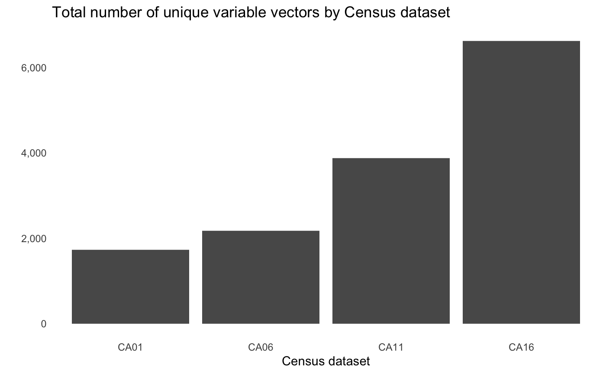

vignettes/data_discovery.Rmd
data_discovery.Rmdcancensus can access Statistics Canada Census data for the 1996, 2001, 2006 Censuses, the 2011 Census and National Household Survey, as well as the 2016 Census. You can run list_census_datasets to check what datasets are currently available for access through the CensusMapper API. Additional data for the 2016 Census will be included in CensusMapper within a day or two after public release by Statistics Canada. Statistics Canada maintains a release schedule for the Census 2016 Program which can be viewed on their website.
Thanks to contributions by the Canada Mortgage and Housing Corporation (CMHC), cancensus now includes additional Census-linked datasets as open-data releases. These include annual tax-filer data at the census tract level for tax years 2000 through 2017, which includes data on incomes and demographics, as well as specialized crosstabs for Structural type of dwelling by Document type, which details occupancy status for residences. These crosstabs are available for the 2001, 2006, 2011, and 2016 Census years at all levels starting with census tract.
## # A tibble: 28 x 6
## dataset description geo_dataset attribution reference reference_url
## <chr> <chr> <chr> <chr> <chr> <chr>
## 1 CA1996 1996 Canada Ce… CA1996 StatCan 1996… 92-351-U https://www150.s…
## 2 CA01 2001 Canada Ce… CA01 StatCan 2001… 92-378-X https://www150.s…
## 3 CA06 2006 Canada Ce… CA06 StatCan 2006… 92-566-X https://www150.s…
## 4 CA11 2011 Canada Ce… CA11 StatCan 2011… 98-301-X… https://www12.st…
## 5 CA16 2016 Canada Ce… CA16 StatCan 2016… 98-301-X https://www150.s…
## 6 CA01xSD 2001 Canada Ce… CA01 StatCan 2001… 92-378-X https://www150.s…
## 7 CA06xSD 2006 Canada Ce… CA06 StatCan 2006… 92-566-X https://www150.s…
## 8 CA11xSD 2011 Canada Ce… CA11 StatCan 2011… 98-301-X https://www150.s…
## 9 CA16xSD 2016 Canada Ce… CA16 StatCan 2016… 98-301-X https://www150.s…
## 10 TX2000 2000 T1FF taxf… CA1996 StatCan 2000… 72-212-X https://www150.s…
## # … with 18 more rowsThe list_census_datasets() function also provides additional background like series reference code, catalogue reference, and attribution details.

The Census datasets that the cancensus package provides access to are rich in detail but they can be complex to navigate. There are thousands of variable vectors, including separate vector indicators for aggregations split by Total, Female, and Male populations. As a result, the total number of vectors per dataset is significant, ranging from 1,715 in the CA01 dataset to 6,623 in the CA16 one.
list_census_vectors('CA16')## # A tibble: 6,623 x 7
## vector type label units parent_vector aggregation details
## <chr> <fct> <chr> <fct> <chr> <chr> <chr>
## 1 v_CA16… Total Population… Numb… <NA> Additive CA 2016 Census; …
## 2 v_CA16… Total Population… Numb… <NA> Additive CA 2016 Census; …
## 3 v_CA16… Total Population… Numb… <NA> Average of … CA 2016 Census; …
## 4 v_CA16… Total Total priv… Numb… <NA> Additive CA 2016 Census; …
## 5 v_CA16… Total Private dw… Numb… v_CA16_404 Additive CA 2016 Census; …
## 6 v_CA16… Total Population… Ratio <NA> Average of … CA 2016 Census; …
## 7 v_CA16… Total Land area … Numb… <NA> Additive CA 2016 Census; …
## 8 v_CA16… Total Total - Age Numb… <NA> Additive CA 2016 Census; …
## 9 v_CA16… Male Total - Age Numb… <NA> Additive CA 2016 Census; …
## 10 v_CA16… Female Total - Age Numb… <NA> Additive CA 2016 Census; …
## # … with 6,613 more rowslist_census_vectors(dataset) retrieves an index of all available vectors for a given dataset from the CensusMapper API or local cache if recently called. Each Census variable has a vector code assigned to it with naming pattern that goes v_{dataset}_{index}. This is the code by which vectors are identified through the CensusMapper API. In addition the vector code, there is additional information showing population type, aggregation type, label and details, as well as variable hierarchy. This function can also be used to show the variables for additional datasets made accessible through the CensusMapper API.
Due to the large number of Census variables it can be hard to find the right data. There is a function for searching through Census variable metadata in a few different ways. There are three types of searches possible using this function: exact search, which simply looks for exact string matches for a given query against the vector dataset; keyword search, which breaks vector metadata into unigram tokens and then tries to find the vectors with the greatest number of unique matches; and, semantic search which works better with search phrases and has tolerance for inexact searches. Switching between search modes is done using the query_type argument when calling find_census_vectors() function.
Note that variable search is optimized for the Census variables in the main Census datasets. While searches generally work for variables in additional datasets such as cross-tabs and taxfiler data, they have not been extensively tested against these datasets.
Exact search uses exact string matching. It is best used when you know exactly the term you are looking for, and is not robust to spelling errors.
find_census_vectors("Oji-cree", dataset = "CA16", type = "total", query_type = "exact")## # A tibble: 4 x 4
## vector type label details
## <chr> <fct> <chr> <chr>
## 1 v_CA16_626 Total Oji-Cr… Language; Total - Mother tongue for the total popula…
## 2 v_CA16_14… Total Oji-Cr… Language; Total - Language spoken most often at home…
## 3 v_CA16_26… Total Oji-Cr… 25% Data; Total - Knowledge of languages for the pop…
## 4 v_CA16_59… Total Oji-Cr… 25% Data; Work; Total - Language used most often at …This, on the other hand, will return a warning.
find_census_vectors("Ojib-cree", dataset = "CA16", type = "total", query_type = "exact")## Warning: No exact matches found. Please check spelling and try again or consider using semantic or keyword search.
## See ?find_census_vectors() for more details.
##
## Alternatively, you can launch the Censusmapper web API in a browser by calling explore_census_vectors(dataset)Unless otherwise specified, find_census_vectors() will use exact search as the default option.
Keyword search is meant to be used when you know the approximate subject matter of the variable without knowing the exact variable you are looking for. Under the hood, keyword search splits the query and vector details into unique unigram tokens and then looks for the vectors with the greatest number of matches.
find_census_vectors('commute mode', dataset = 'CA16', type = 'female', query_type = 'keyword', interactive = FALSE)## # A tibble: 7 x 4
## vector type label details
## <chr> <fct> <chr> <chr>
## 1 v_CA16_… Female Total - Main mode of commutin… 25% Data; Commute; Total - Mai…
## 2 v_CA16_… Female Car, truck, van - as a driver 25% Data; Commute; Total - Mai…
## 3 v_CA16_… Female Car, truck, van - as a passen… 25% Data; Commute; Total - Mai…
## 4 v_CA16_… Female Public transit 25% Data; Commute; Total - Mai…
## 5 v_CA16_… Female Walked 25% Data; Commute; Total - Mai…
## 6 v_CA16_… Female Bicycle 25% Data; Commute; Total - Mai…
## 7 v_CA16_… Female Other method 25% Data; Commute; Total - Mai…Keyword search will show all results that have the highest number of unique keyword matches. What happens if there are other keyword matches that have fewer total matches? By default, the function argument is set as interactive = TRUE, which will prompt the user with a console menu option to see the rest of the matches or not. If using find_census_vectors() in a script or reproducible documentation, we recommend setting this argument to interactive = FALSE.
Semantic search works best with phrases. Rather than the decontextualized unigrams of keyword search, semantic search splits queries and vector details into n-grams and finds matches using approximate string distances based on the generalized Levenshtein distance.
find_census_vectors("after tax incomes", dataset = "CA16", type = "total", query_type = "semantic")## # A tibble: 56 x 4
## vector type label details
## <chr> <fct> <chr> <chr>
## 1 v_CA16_… Total Number of after-tax income re… Income; Individuals; Total - I…
## 2 v_CA16_… Total Median after-tax income in 20… Income; Individuals; Total - I…
## 3 v_CA16_… Total Percentage with after-tax inc… Income; Individuals; Total - I…
## 4 v_CA16_… Total Total - After-tax income grou… Income; Individuals; Total - A…
## 5 v_CA16_… Total Without after-tax income Income; Individuals; Total - A…
## 6 v_CA16_… Total With after-tax income Income; Individuals; Total - A…
## 7 v_CA16_… Total Under $10,000 (including loss) Income; Individuals; Total - A…
## 8 v_CA16_… Total $10,000 to $19,999 Income; Individuals; Total - A…
## 9 v_CA16_… Total $20,000 to $29,999 Income; Individuals; Total - A…
## 10 v_CA16_… Total $30,000 to $39,999 Income; Individuals; Total - A…
## # … with 46 more rowsSemantic search is more robust to spelling and punctuation issues that may come up with exact search. For example, while this throws a warning:
find_census_vectors("ojib cree", dataset = "CA16", type = "total", query_type = "exact")## Warning: No exact matches found. Please check spelling and try again or consider using semantic or keyword search.
## See ?find_census_vectors() for more details.
##
## Alternatively, you can launch the Censusmapper web API in a browser by calling explore_census_vectors(dataset)This will find the correct Census vector.
find_census_vectors('ojib cree', dataset = 'CA16', type = 'total', query_type = 'semantic')## Multiple possible matches. Results ordered by closeness.## # A tibble: 4 x 4
## vector type label details
## <chr> <fct> <chr> <chr>
## 1 v_CA16_626 Total Oji-Cr… Language; Total - Mother tongue for the total popula…
## 2 v_CA16_14… Total Oji-Cr… Language; Total - Language spoken most often at home…
## 3 v_CA16_26… Total Oji-Cr… 25% Data; Total - Knowledge of languages for the pop…
## 4 v_CA16_59… Total Oji-Cr… 25% Data; Work; Total - Language used most often at …Results are ordered by string proximity if there are multiple possible matches.
Statistics Canada uses an official classification of geographic areas known as the Standard Geographical Classification (SGC), which is updated periodically. The latest version is based on the 2016 Census. Geographic classification codes are standardized across Statistics Canada products, including the Census as well as any other Statistics Canada dataset. In practice, this means that the region ID for the Vancouver Census subdivision is 5915022 across all products. In cancensus the region ID code is used to identify the appropriate spatial vector data to retrieve alongside Census data. These region IDs have a predictable structure, where provinces are two digits, Census divisions are 4 digits (including 2 for the province), and Census subdivisions have 7 digits (including 2 for the province, and 2 for the Census division).
## # A tibble: 3 x 4
## PR CD CSD name
## <dbl> <dbl> <dbl> <chr>
## 1 35 NA NA Ontario
## 2 35 18 NA Durham (Regional municipality
## 3 35 18 13 Oshawa (City)These levels are hierarchical and complete in that a province is split in Census divisions, which are then split into Census subdivisions.
Geographies have standardized names for the province, Census division, and Census subdivision levels, as well as Census metropolitan areas and Census agglomerations. Lower geographic levels such as Census tracts or dissemination areas (DA, EA, and DB) are not named or listed but have unique identifying codes derived from their parent Census subdivision.
## # A tibble: 6 x 2
## level n
## <chr> <int>
## 1 C 1
## 2 CA 14
## 3 CD 293
## 4 CMA 35
## 5 CSD 5148
## 6 PR 13There is also an additional region, with the id 01 and the level code C which represents all of Canada as a whole.
Data can also be extracted at the Census Metropolitan Area (CMA) or Census Agglomeration (CA) level, which is derived from a variant of the SGC known as the Statistical Area Classification. Hierarchically, CMAs and CAs represent a collection of constituent Census subdivisions.
A Census metropolitan area consists of adjacent municipalities with a defined core with a total population of at least 100,000 of which 50,000 or more must live in the core based on Census data. Adjacent municipalities must have a high degree of integration with the core, which Statistics Canada measures based on the commuting flows indicated in Census data. Census Agglomeration areas have to have a core population above 10,000.
All CMAs and CAs consist of Census subdivisions but not all Census subdivisions are a subset of a CMA or a CA. For more details on CMAs and CAs, consult Statistics Canada’s Census Dictionary article for Census metropolitan areas (CMA) and census agglomerations (CA). All CMAs and some CAs have data at the Census tract level, but most CAs do not. The 2016 Census has 35 CMAs and 14 CAs with Census tracts that have their own defined geography. There are a further 106 CAs without Census tracts that do not have their own distinctly defined geographies.
Dissemination areas (DA) are the smallest atomic geographic unit at which all census data is captured. DAs cover the entirety of Canada and follow the boundaries of census subdivisions and census tracts. While inter-census geographic stability is not guaranteed, they generally tend to be as stable as the census tracts and census subdivisions that they make up. In addition to census boundaries, DAs will generally follow natural boundaries created by other spatial features like roads, railways, water features, and designed to be spatially compact and with a target population around 400-700 persons. The 2016 census data has 56,589 distinct DAs.
Enumeration areas (EA) were the DA equivalent for censuses prior to 2001. Similar to DAs, EAs were used to as the basic level at which census data was collected. They do not necessarily correspond accurately to DAs in data from 2001 onwards.
Dissemination block (DB) level data is available for the 2001-2016 datasets. DBs are essentially city blocks, bounded by intersecting streets and therefore are largely the product of road networks at the time of the census. The geographies and identification codes of DBs are not necessarily stable over time. DBs are split whenever they intersect with boundaries of higher geographic levels in such a way as to ensure that they can be aggregated upwards precisely. DBs only provide data for population, dwelling counts, and number of households (from 2006 onwards) without any additional characteristic data. DBs with population under 15 have their population counts adjusted for privacy. For the 2016 census, there are close to half a million DB distinct regions.
For any valid Census dataset, you can view all available Census regions by calling list_census_regions(dataset). This will retrieve the region code, the name, and the level code indicating the type of geography. Other information includes population, municipal status, as well as parent geographic ids for lower levels. All CMAs are included with their own defined geography, as well as those CAs which have their own Census tracts.
list_census_regions('CA16')## # A tibble: 5,504 x 8
## region name level pop municipal_status CMA_UID CD_UID PR_UID
## <chr> <chr> <chr> <int> <chr> <chr> <chr> <chr>
## 1 01 Canada C 3.52e7 <NA> <NA> <NA> <NA>
## 2 35 Ontario PR 1.34e7 <NA> <NA> <NA> <NA>
## 3 24 Quebec PR 8.16e6 <NA> <NA> <NA> <NA>
## 4 59 British Columbia PR 4.65e6 <NA> <NA> <NA> <NA>
## 5 48 Alberta PR 4.07e6 <NA> <NA> <NA> <NA>
## 6 46 Manitoba PR 1.28e6 <NA> <NA> <NA> <NA>
## 7 47 Saskatchewan PR 1.10e6 <NA> <NA> <NA> <NA>
## 8 12 Nova Scotia PR 9.24e5 <NA> <NA> <NA> <NA>
## 9 13 New Brunswick PR 7.47e5 <NA> <NA> <NA> <NA>
## 10 10 Newfoundland and… PR 5.20e5 <NA> <NA> <NA> <NA>
## # … with 5,494 more rowsWe can also search through all named geographies. This will return any geographies that have a name that matches or partially matches the search query.
search_census_regions("Vancouver","CA16")## # A tibble: 7 x 8
## region name level pop municipal_status CMA_UID CD_UID PR_UID
## <chr> <chr> <chr> <int> <chr> <chr> <chr> <chr>
## 1 59933 Vancouver CMA 2.46e6 B <NA> <NA> 59
## 2 5915 Greater Vancouver CD 2.46e6 RD <NA> <NA> 59
## 3 5915022 Vancouver CSD 6.31e5 CY 59933 5915 59
## 4 5915046 North Vancouver CSD 8.59e4 DM 59933 5915 59
## 5 5915051 North Vancouver CSD 5.29e4 CY 59933 5915 59
## 6 5915055 West Vancouver CSD 4.25e4 DM 59933 5915 59
## 7 5915020 Greater Vancouver… CSD 1.61e4 RDA 59933 5915 59Sometimes it can be easier to find the right vectors or regions by exploring the layout and hierarchy of Census data. This is especially true when we are not sure of what information is available or are not sure where to start. Finding the right Census geographic code on a map will be easier for some than using named search. This is also handy if we want to assemble a custom aggregation of region codes at different hierarchies.
To facilitate this, we have included a couple of convenience functions that take you directly to an interactive tool with variable and region details on the Censusmapper website. To explore the hierarchical variable structure of a given dataset, say the 2006 Census, running explore_census_vectors(dataset = "CA06"). To view Census geography on an interactive map, there is explore_census_regions(dataset = "CA16"). As usual, vectors and geographies for different Census datasets can be retrieved by using the appropriate dataset code for the dataset argument.